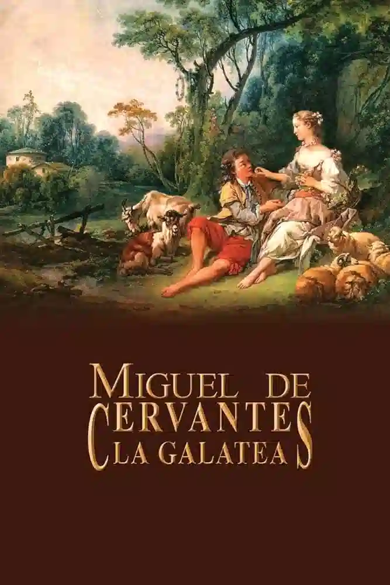

La novela pastoril es un subgénero narrativo que floreció en Europa durante el Renacimiento. Estas obras se caracterizan por presentar una visión idealizada de la vida rural, donde pastores y pastoras viven en armonía con la naturaleza, dedicados al amor, la música y la poesía. Los protagonistas, generalmente jóvenes nobles disfrazados de pastores, se enamoran, compiten en juegos pastoriles y celebran fiestas campestres. La novela pastoril buscaba recrear un mundo de paz, belleza y sencillez, alejado de las preocupaciones y conflictos de la vida urbana
☸️La novela pastoril presenta una visión idílica del campo, donde la vida es simple, tranquila y libre de problemas. Los pastores viven en armonía con la naturaleza, dedicados a sus rebaños y a las actividades campestres.
☸️El amor es el tema central de este género, y se presenta de forma idealizada y cortés. Los protagonistas se enamoran perdidamente y deben superar obstáculos como la diferencia de clase social, la oposición de los padres o los celos de rivales.
☸️Las novelas pastoriles se desarrollan en un espacio idealizado conocido como "locus amoenus", un lugar paradisíaco de gran belleza natural, generalmente un valle, un bosque o una pradera florida.
☸️El lenguaje utilizado en las novelas pastoriles es bucólico, es decir, rico en referencias a la naturaleza, la vida rural y la mitología clásica. Se utilizan recursos como la alegoría, la metáfora y el símil para crear una atmósfera idílica y poética.
☸️Las novelas pastoriles tuvieron una gran influencia en la literatura posterior, especialmente en el desarrollo del género de la novela sentimental. Autores como Miguel de Cervantes y William Shakespeare se inspiraron en este género para sus obras.
| Nombre de la obra y Año de publicación | Autor | De qué trata | Imagen |
|---|---|---|---|
| La Arcadia (1504) | Jacopo Sannazaro | Sincero, un pastor, se enamora perdidamente de la pastora Polifilo. Sin embargo, su amor se ve amenazado por la llegada de Ergasto, otro pastor que también compite por el afecto de Polifilo. Sincero y Ergasto se enfrentan en una serie de desafíos y competiciones para demostrar su amor a Polifilo. Finalmente, Polifilo elige a Sincero y los dos viven felices para siempre. | |
| La Diana (1559) | Jorge de Montemayor | Diana, una pastora, se enamora perdidamente del caballero Silvano. Sin embargo, su amor se ve amenazado por la oposición de los padres de Diana y las intrigas de la hechicera Felicia. Silvano es engañado y cree que Diana lo ha traicionado, lo que lo lleva a abandonarla. Diana, desconsolada, se retira al bosque para vivir en soledad. Finalmente, Silvano descubre la verdad y se reencuentra con Diana, y los dos viven felices para siempre. | |
| La Galatea (1585) | Miguel de Cervantes | Galatea, una ninfa, se enamora perdidamente del pastor Elicio. Sin embargo, su amor se ve amenazado por la oposición de la diosa Diana y las intrigas de la hechicera Urganda. Elicio es engañado y cree que Galatea lo ha traicionado, lo que lo lleva a abandonarla. Galatea, desconsolada, se retira al mar para vivir en soledad. Finalmente, Elicio descubre la verdad y se reencuentra con Galatea, y los dos viven felices para siempre. |  |
https://www.cervantesvirtual.com/portales/novela_pastoril/presentacion/
https://www.candelavizcaino.es/literatura/novela-pastoril.html#google_vignette
https://cvc.cervantes.es/literatura/conjuro_libros/amor.htm